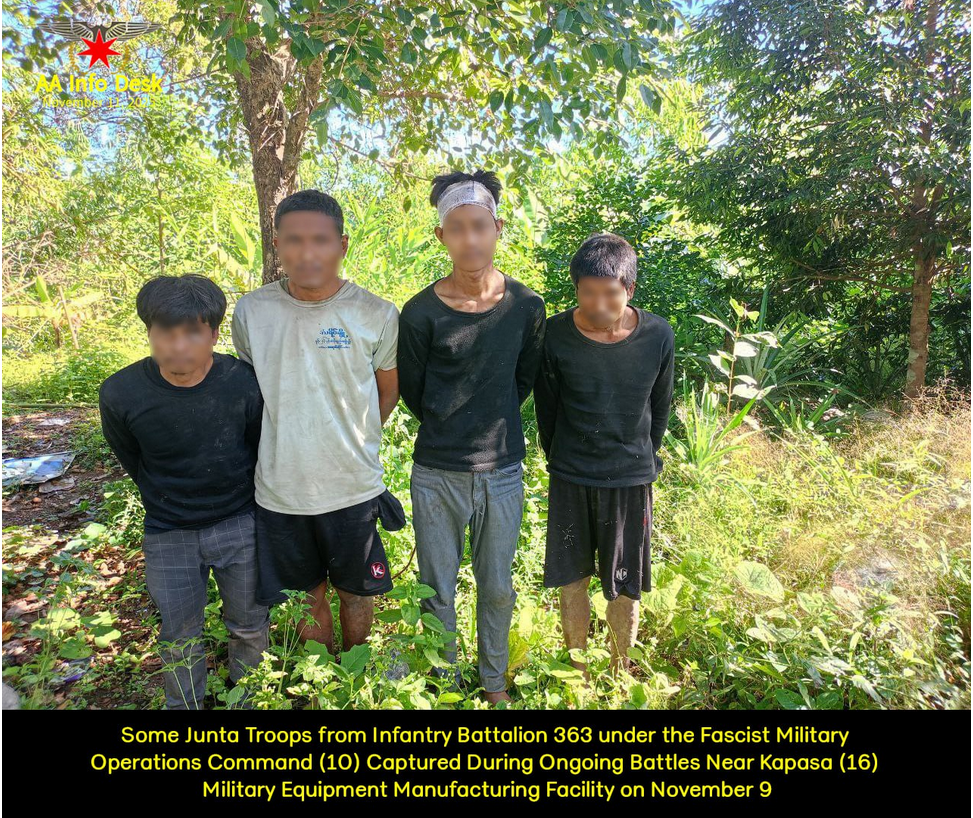
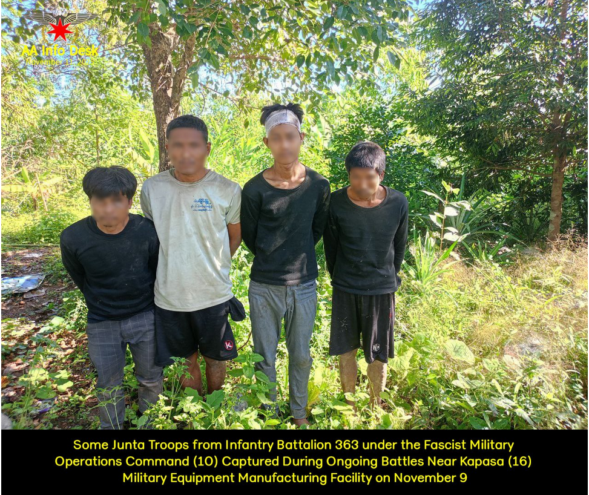

Arakan Army


Some Fascist Junta Troops Fleeing During Ongoing Battles Near Nat Yay Kan Military Operation Command,
Lay Lar Mountain, Kapasa (16) Military Equipment Manufacturing Facility, and Irrawaddy Division
 


Some Fascist Junta Troops Fleeing During Ongoing Battles Near Nat Yay Kan Military Operation Command, Lay Lar Mountain, Kapasa (16) Military Equipment Manufacturing Facility, and Irrawaddy Division Adjacent to Arakan Are Captured, While White-Flag Surrenders Continue to Increase November 11, 2025 The Arakan Army (AA) continues to engage the fascist military junta’s forces with strong offensives and counter-defensive operations along the borders of Bago, Magway, and Irrawaddy Regions, adjacent to Arakan State. Fierce clashes have been occurring daily, as junta troops—unable to withstand the AA’s advances—suffer heavy disarray. Many newly conscripted soldiers, forcibly recruited into the junta’s army, are reportedly unwilling to fight, fleeing the battlefield due to minimal chances of survival. An increasing number of junta soldiers have surrendered under white flags, while others have been captured, both armed and unarmed, during recent engagements. Between November 8 and 10, a total of 16 junta soldiers—including deserters, white-flag surrenders, and captured personnel—from Infantry Battalions 361 and 363, under the fascist military operation command Sa Ka Kha (10), were seized near ongoing battles around the junta’s Kapasa Military Equipment Manufacturing Facility (16). On November 8 and 9, a total of 10 troops from Infantry Battalion 368, under the Military Operations Command (10), were involved in battles near Lay Lar Mountain — approximately 2,500 meters to the east of Nyaung Kyoe Village in Pan Taung Township, Bago Region — which has also become another active battleground.
Fierce clashes have been occurring daily, as junta troops—unable to withstand the AA’s advances—suffer heavy disarray. Many newly conscripted soldiers, forcibly recruited into the junta’s army, are reportedly unwilling to fight, fleeing the battlefield due to minimal chances of survival. An increasing number of junta soldiers have surrendered under white flags, while others have been captured, both armed and unarmed, during recent engagements. Between November 8 and 10, a total of 16 junta soldiers—including deserters, white-flag surrenders, and captured personnel—from Infantry Battalions 361 and 363, under the fascist military operation command Sa Ka Kha (10), were seized near ongoing battles around the junta’s Kapasa Military Equipment Manufacturing Facility (16). On November 8 and 9, a total of 10 troops from Infantry Battalion 368, under the Military Operations Command (10), were involved in battles near Lay Lar Mountain — approximately 2,500 meters to the east of Nyaung Kyoe Village in Pan Taung Township, Bago Region — which has also become another active battleground.
News
Recent Post

မွေ့နေ့ဆုတောင်းပေးကြသော သက်ဆိုင်ရာအဖွဲ့အစည်း

လေကြောင်း၊ ရေကြောင်း နှင့် လက်နက်ကြီးရန်

Statement Regarding Cross-border military
Comments